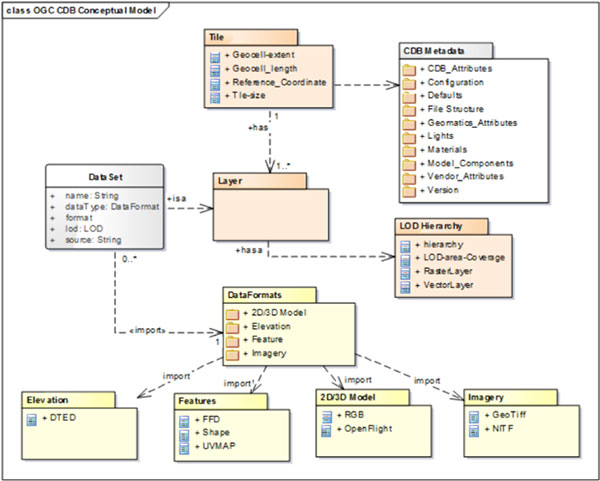

Test suite: ets-cdb10
Scope
This executable test suite (ETS) verifies the conformance of a CDB database (the IUT) with respect to the OGC CDB 1.0 specification. The test suite currently validates the metadata, directory structure, and file naming against the specification and will report on any exceptions to the specification.
The test suite has partial support for OGC CDB 1.1; some tests will correctly pass, and other will fail as they have not been updated to handle the changes in OGC CDB 1.1. The current goal is to maximize support for version 1.0 and add support for version 1.1 as edge cases are discovered.
Figure 1: Conceptual Model

Figure source: OGC CDB 1.0 Volume 11: OGC CDB Core Standard Conceptual Model
Several conformance classes are defined in the CDB 1.0 specification; the ones listed below are covered by this test suite:
- CDB Structure
- /conf/core/file-structure
- /conf/core/gtmodel-naming
- /conf/core/mmodel-naming
- /conf/core/tiled-data
- /conf/core/navdata-naming
- /conf/core/nav-data
- /conf/core/tiled-raster-datasets-general
- /conf/core/tiled-raster-elevation-terrain
- /conf/core/tiled-terrain-bathymetry
- Metadata and Versioning
- /conf/core/metadata-version
- /conf/core/metadata-datasets
Test requirements
The documents listed below stipulate requirements that must be satisfied by a conforming implementation.
Tests for various dataset naming and directory placements will be skipped if the CDB (IUT) does not contain that dataset.
Implemented Tests in the Test suite: ets-cdb10
Several conformance classes and tests are defined in the CDB 1.0 specification; this document list the implemented ones.
Test suite structure
The test suite definition file (testng.xml) is located in the root package, org.opengis.cite.cdb10. A conformance class corresponds to a <test> element, each of which includes a set of test classes that contain the actual test methods. The general structure of the test suite is shown in Table 1.
| Conformance class | Test classes |
|---|---|
| CDB Structure | org.opengis.cite.cdb10.cdbStructure.* |
| Metadata And Versioning | org.opengis.cite.cdb10.metadataAndVersioning.* |
The Javadoc documentation provides more detailed information about the test methods that constitute the suite.
Test run arguments
The test run arguments are summarized in Table 2. The Obligation descriptor can have the following values: M (mandatory), O (optional), or C (conditional).
| Name | Value domain | Obligation | Description |
|---|---|---|---|
| iut | URI | M | A URI that refers to the implementation under test or metadata about it. Ampersand ('&') characters must be percent-encoded as '%26'. This URI should refer to a CDB on the file system that is accessible by this test suite tool, and not refer to a web URI. This also applies when running under TEAM Engine. |
| ics | A comma-separated list of string values. | O | An implementation conformance statement that indicates which conformance classes or options are supported. E.g. "1,2" would run both "CDB Structure" tests and "Metadata and Versioning" tests. |
Test Suite Self-Test
This test suite contains a self-test that will generate scenarios to ensure that the CITE test suite will properly catch problems in a CDB. This self-test is organized under the src/test/java/org.opengis.cite.cdb10 package and runs using JUnit.
Please see the “How To” guides for instructions on running this self-test suite in various environments.
JDK Support
This test suite was developed to run on Oracle JDK 8. It has been tested to also run under OpenJDK 8.
The following JDKs have been tested to run the self-test suite, but have not been checked to run the CITE suite against a CDB.
- Oracle JDK 9
- OpenJDK 10
- OpenJDK 11
- OpenJDK 12
Please note that some of these JDKs no longer are supported and that this test suite will be moving to support the JDKs that are still supported by Oracle.